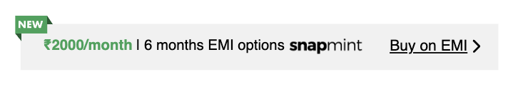
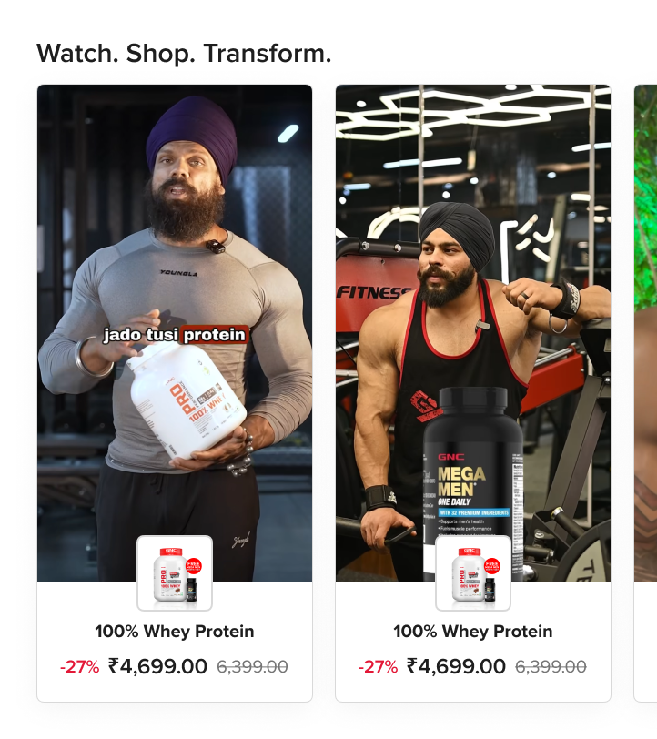
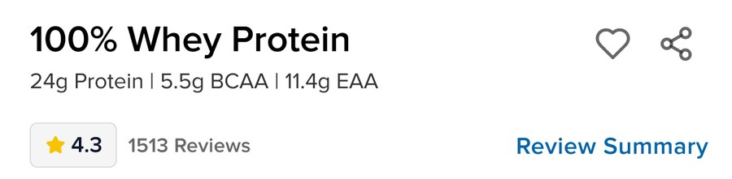
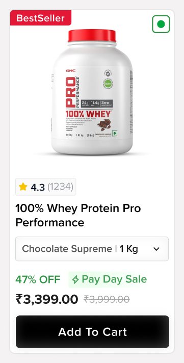
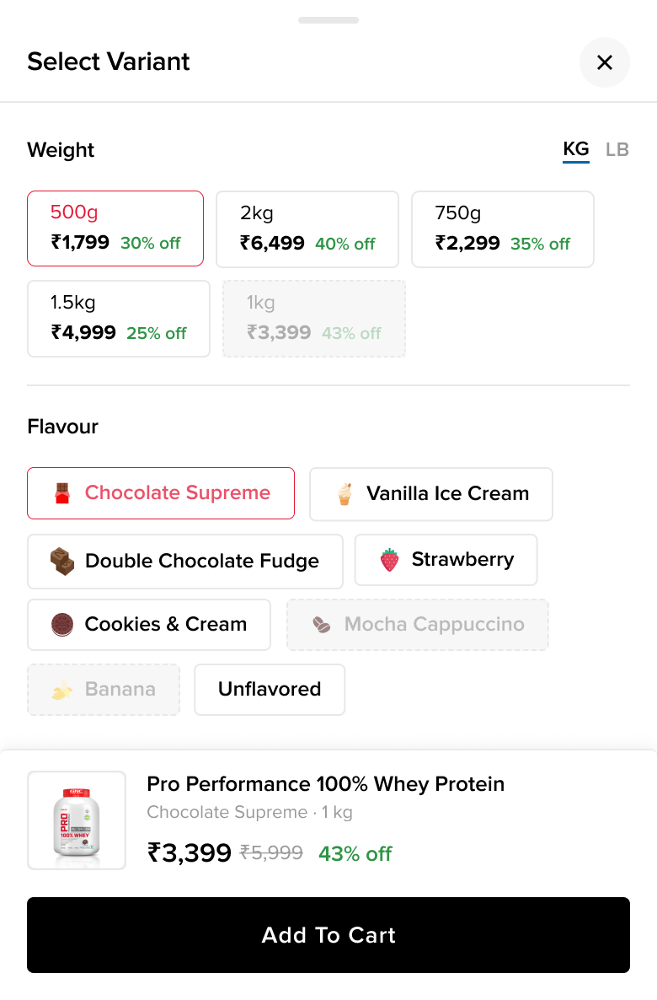
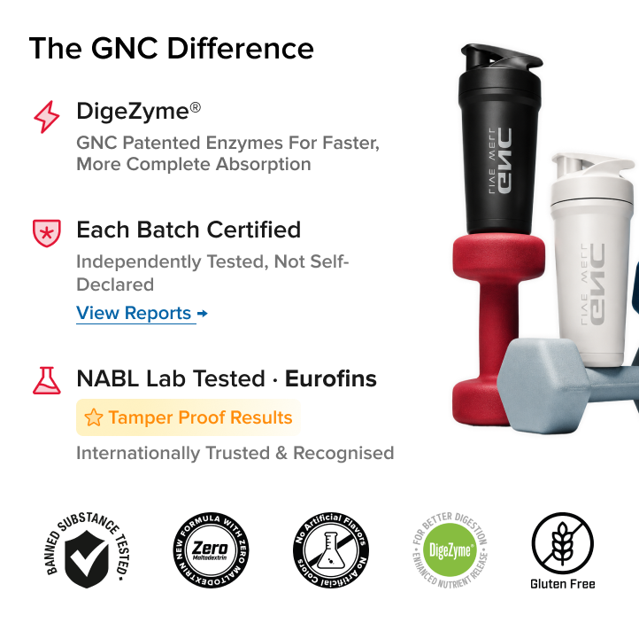
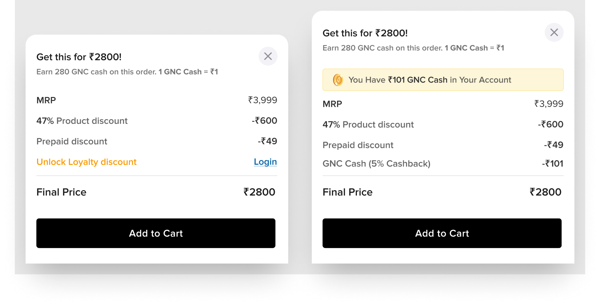
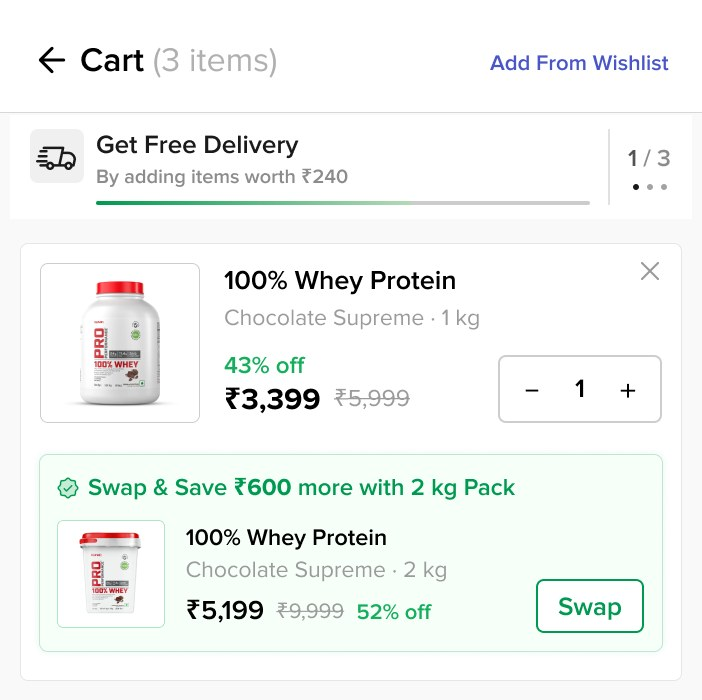
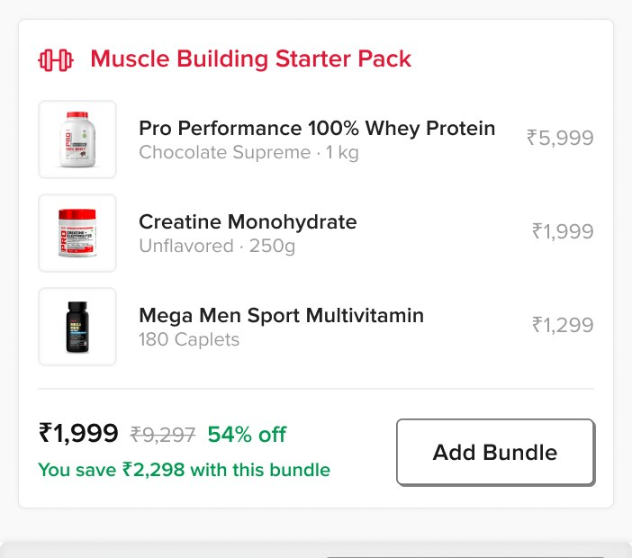

What aids decision making while buying supplements online?
A methodical user-research and conversion optimization program designed to diagnose trust hurdles, buying friction, and pricing models for GNC India.
Unbiased Inquiries
To uncover raw behaviors rather than opinion-gathering on design assets, our conversational questionnaire avoided direct UI discussion completely.
What's your lifestyle like?
How did you hear about GNC?
What makes you trust a nutrition brand?
How do you decide which supplement to take?
Do you wait for offers to buy, or buy as and when needed?
Would you subscribe for a discount?
Discovery
- Instagram dominant via influencer custom discount codes.
- Word of mouth equally strong: peer friends, gym trainers, and colleagues.
- Active WhatsApp groups push timely deals and coupon codes.
- YouTube is highly utilized by research-led analytical buyers.
- Offline pharmacy chains (Apollo) popular for in-person instant gratification.
Trust
- Trainer or peer recommendation is the absolute strongest credibility signal.
- '90 Years' brand heritage anchors older and research-led segments.
- Functional trust is proven post-purchase by taste, mixability, and lack of bloating.
- Strict research-led buyers heavily scrutinize ingredient profiles and lab tests.
- Widespread offline local store availability legitimizes the brand's premium stature.
Purchase Triggers
- A large price-conscious segment actively waits for deals, believing an offer is always live.
- Higher-AOV buyers ignore discounts and buy immediately on personal or health need.
Subscription
- Higher-AOV health planners are highly open to friction-free automated delivery.
- Price-sensitive cohorts resist subscriptions, wanting to retain flexibility for bigger flash offers.
Confusion
- Wellness/lifestyle buyers suffer from significantly more confusion than dedicated protein buyers.
- Back of pack ingredient label is the primary source of personal reference.
- Coached/guided fitness enthusiasts experience the least decision paralysis.
Buying Patterns
- Single-product checkout is dominant; basket bundling is not instinctively natural.
- Instinctive pairings do exist: Protein + Creatine, or Protein + Multivitamins.
- Restock habits are strictly monthly, mapping directly to standardized packaging volume sizes.
Price Perception
- GNC is viewed as cost-effective only when an offer is clearly active.
- The standard no-offer state actively triggers a 'wrong time to buy' anxiety.
- Budget-constrained consumers plan routines around deal calendars rather than need cycles.
Make the site good at confirming
- Persistent '90 Years Heritage' legacy badge directly on the product detail page.
- Direct lab test certificate results available via a prominent expandable widget.
- Clear back-of-package nutritional panel previews embedded inside listing images.
- Highlighted flavor profiles and mixability feedback scores clearly visible.
- Official 'Trainer Recommended' contextual tags on high-performing SKUs.
Give the uncoached buyer a framework
- Goal-based recommendation quiz based on the customized FAE framework (Goal → Fitness Level → Dietary Preference → Budget → Sensitivities).
- Expertly curated pre-configured product bundles positioned explicitly as 'trainer recommended logic'.
Convert the wait into a cycle
- Direct currency % discount representations explicitly featured on product listings.
- Automated CRM restock nudges systematically sent at consumer consumption days 22-25.
- Highly visual wishlist price-drop notifications triggered in real-time.
- Customizable 'Subscribe & Save' programs displaying explicit absolute rupee savings upfront.
| Campaign experiment | Primary metric goal | Measured lift |
|---|---|---|
| EMI Options | Purchase Revenue | +13.37% |
| Shoppable Videos | Purchase Revenue | +11.79% |
| Shoppable Videos (New) | Purchase Revenue | +10.49% |
| Product Title | Purchase Revenue | +10.00% |
| Product Card | ATC on product card | +8.51% |
| Variant Selector Popup | Purchase Event | +7.43% |
| Trustification Section | Shopify Purchase | +6.35% |
| GNC Cash PDP | Purchase Event | +5.89% |
| Cart Progress Bar | Purchase Revenue | +5.02% |
| New Cart Upsell UI | Purchase Revenue | +3.84% |
EMI
A worldwide whey protein shortage is pushing prices up. Introducing partial payment / EMI keeps the purchase affordable.

Shoppable Videos
Social proof is a major way of gaining user trust — enrich it with shoppable videos.

1 2 3- Shoppable, not just watchableThe rail sits on the PDP as “Watch. Shop. Transform.” — proof and purchase in the same module.
- Real creators, regional languageCaptions run in the buyer's own language, matching the influencer discovery channel the research identified.
- Product attached to the proofEach video carries its SKU, price and discount beneath it, so the trust signal converts without a hunt.
Product Title
Make the title crisp. Let users see only what's needed.

1 2 3- Name only“100% Whey Protein” — no weight, flavour or marketing string competing for the first read.
- The spec that decides24g Protein · 5.5g BCAA · 11.4g EAA on one line, for the research-led buyer who scrutinises the profile.
- Rating before the fold4.3 from 1,513 reviews, with a Review Summary shortcut, since reviews are the fallback credibility signal.
Product Card
If users are making an informed decision about size and flavour variant, put the variant selector on the card and simplify the information to make it more readable.

1 2 3 4- Rating above the name4.3 from 1,234 reviews reads before the title, since reviews are the fallback credibility signal in the grid too.
- The variant selector, on the cardFlavour and weight resolve in the listing — the size-and-flavour decision no longer needs a trip to the PDP and back.
- Never a no-offer state47% OFF sits beside the live campaign tag, so the card never shows the bare price that reads as the wrong time to buy.
- Buy from the gridAdd To Cart completes the whole decision inside the card, which is what the ATC metric measures.
Variant Selector Popup
A variant selector popup on the PDP curbs back-and-forth scrolling and focuses decision making.

1 2 3 4- Every combination in one viewWeight and flavour sit in a single sheet, so switching no longer means scrolling back to re-check price.
- Price and discount on every tileEach weight carries its own price and % off — the no-offer state never appears.
- Unavailable shown, not hidden1kg, Mocha Cappuccino and Banana stay visible but greyed, so dead ends are answered before they're discovered.
- Commit without leavingA sticky summary restates the exact selection and price above Add To Cart.
Trustification Section
If trust is our major driver, it should get its own section.

1 2 3 4- Patented, not genericDigeZyme® leads — a proprietary claim rather than a category one.
- Independently tested, not self-declaredEach batch certified, with View Reports linking to the actual certificates the research-led segment scrutinises.
- Named third partyNABL Lab Tested · Eurofins, tagged Tamper Proof Results — the lab is named, so the claim is checkable.
- Badges do the scanningBanned-substance tested, zero maltodextrin, no artificial colours, DigeZyme, gluten free — for buyers who won't read the copy.
GNC Cash PDP
If we're giving people loyalty points and letting them redeem them, that should shine upfront.

1 2 3- The locked state still sellsLogged out, the loyalty line is shown as an unlockable discount with a Login prompt rather than hidden.
- Balance surfaced on sightLogged in, the popup opens with the cash already in the account, applied as a visible 5% cashback line.
- The maths done for themMRP, product discount, prepaid discount and loyalty resolve to one Final Price — answering “what is this actually worth to me?”
Cart Progress Bar
—

1 2- A named threshold, and three of them“By adding items worth ₹240” gives the bar a reason and a number, and the 1 / 3 counter means the cart keeps offering a next step after free delivery is reached.
- Swap, don't just addSwap & Save moves the same buyer to a 2kg pack — value growth that fits the monthly restock pattern instead of fighting it.
New Cart Upsell UI
Fix smart recommendations in the cart.

1 2 3- A named goal, not “you may also like”Muscle Building Starter Pack states the outcome, giving the uncoached buyer the framework they lack.
- The pairings buyers already makeProtein + Creatine + Multivitamin — the instinctive combinations the interviews surfaced, not an algorithmic guess.
- Saving in both currencies54% off and “You save ₹2,298” together, with one Add Bundle action instead of three decisions.
Synthesizing with Speed
By leveraging Claude and FigJam AI, we clustered hundreds of disjointed raw user call notes in minutes. This let us stress-test assumptions, align the cross-functional squad, and formulate high-confidence experiment specs rapidly.
Time spent distribution